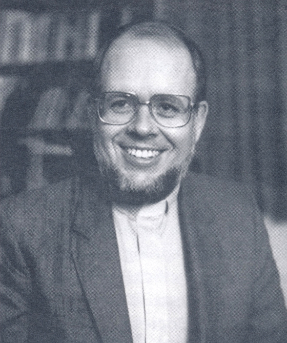

-1-MasterItem.svg)
Stories of Westminster United Church & its People / Page
224
Table
of Contents
Bob and Lorraine and children came to us in 1979 after Reid and Dorothy Vipond
moved east. Following is material written in September of that year by Betty
Halstead
when she was Vice Chair of the Board:
The Thompsons are both natives of Alberta. Bob earned an Education degree
in Calgary and then moved to St. Stephen’s College in Edmonton. Here, two
things affected the direction of his life: he completed his Theological training
and met Lorraine Lareome who was in nursing training. They were married in
the summer of 1966, and were placed in their first pastorate in Morley, a small
town between Calgary and Banff, to serve a community of Stoney Indians
for two years. At the end of the assigned two years, the elders asked them to
stay, but,
since an Indian minister originally from the reserve wished to return, they
resigned.
As a result of an application to the United Church Board of World Missions, to
do missionary
work somewhere in Asia, they were assigned to Japan.The first two years were
spent in Tokyo
studying the language and doing some counselling with an English Church youth
group. In 1970
they were placed in a ‘new town’ area of 130,000 people. The town was a suburb of Osaka
— and they could see the sight of Expo ‘70 from their window.
Here, from 1970 to 1975, Bob worked with a a Japanese Senior minister. Because
the new towns
had a policy of “no church buildings” Bob organized the third “house church” — the congregation
meeting in a rented hall. Because the building was used for other purposes
during the week, Bob’s
car trunk became the storage area for the pulpit, the church library and tapes
with the hymns and
speakers to play them through. Each Sunday’s worship was preceded by a rapid few moments
of furniture moving!
At Christmas, 1975, Bob was called to St. Andrews-Wesley in Vancouver* as an
assistant minister
responsible for Outreach and Christian Education. During his one year furlough
from Japan, he had
worked there while taking training in high-rise apartment ministry.

Rev. Robert Thompson and Lorraine Thompson